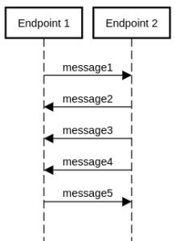
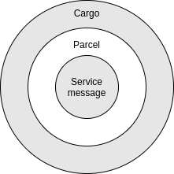
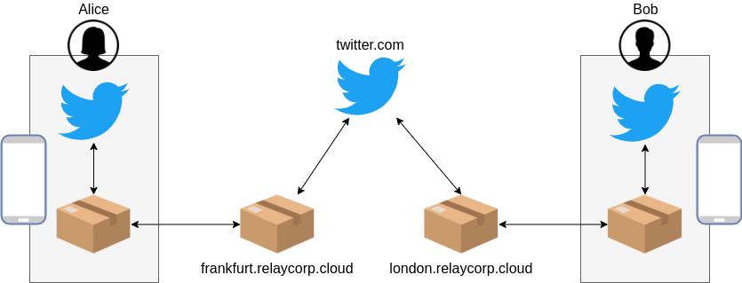
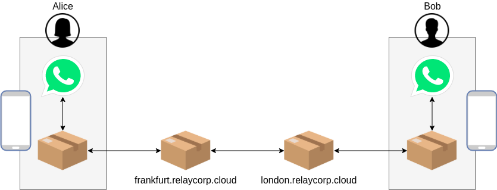
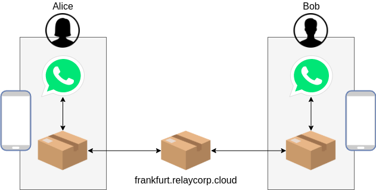

Architecture of Awala services
Awala is a Delay-Tolerant Network (DTN), which means that the software running on the network can tolerate latencies lasting anywhere from a few milliseconds to an indefinite amount of time – or, in Awala’s case, up to 6 months. The space industry, for example, has used DTNs for decades.
We need delay tolerance in Awala in order to use alternative transport media when the Internet is not available – especially in regions where it’s never available. That way we get a wide range of transport options at our disposal, including some which may be extremely slow but very robust.
Compared to traditional Internet software, DNT software has very different opportunities and constraints, and these have a significant impact on the overall architecture of the system. Let’s start by looking at the crux of the problem.
Internet apps use remote procedure calls

Remote Procedure Call (RPC) is the de facto communication pattern of the Internet. It’s what underpins RESTful, gRPC and GraphQL APIs, or anything done over HTTP.
As the name implies, RPCs resemble a pattern we developers are familiar with: Function calls. You pass some input and get some output back – unless something goes wrong, in which case an exception is thrown.
But the thing with unreliable networks like the Internet is that things going wrong is the rule, not the exception.
RPCs work well in a reliable network: One with a low round-trip time and an adequate throughput. But clients become more complicated with the need to implement retries, timeouts and circuit breakers in order to cope with an unusually high round-trip time or an unusually low throughput. Additionally, TLS handshakes exacerbate this issue by further delaying the transmission of the actual payload.
Most importantly, RPCs do not work at all with round-trip times in the order of days or weeks.
Awala apps use asynchronous messaging
By contrast, Awala apps don’t communicate with each other directly. They communicate through one or more brokers, which pass the data along and – when necessary – keep a copy of the data until the next node becomes reachable. This pattern is called store-and-forward, and it’s crucial in delay-tolerant networking.
RPCs can work on store-and-forward networks, but only in theory: RPCs still require a small round-trip time. For this reason, Awala apps use asynchronous messaging instead of RPCs.
In asynchronous messaging, apps don’t communicate through clients and servers: They communicate through peers known as endpoints. Endpoints send messages to each other and there’s no requirement for messages to be responded to.

Awala calls the brokers above gateways, and each computer/smartphone using Awala requires a so-called private gateway (like this app in the case of Android). All Awala-compatible apps will send and receive data through their local private gateway.
Each private gateway is paired to a public gateway on the Internet, and a public gateway may serve many private gateways. By default, all private gateways are paired to public gateways operated by Relaycorp, such as frankfurt.relaycorp.cloud.
Apart from routing and deduping traffic, gateways are also responsible for refusing malicious traffic: All messages going to an endpoint behind a private gateway must be pre-authorised by the recipient. If a message is not properly authorised, the first gateway to find it will drop it. Indeed, Awala has spam protection built-in.
It’s important to embrace asynchronous messaging without trying to replicate a request-response pattern. RPCs could still be emulated to some extent, but they should be generally regarded a code smell. As Hohpe and Woolf eloquently summarise in Enterprise Integration Patterns:
Asynchronous messaging is fundamentally a pragmatic reaction to the problems of distributed systems. Sending a message does not require both systems to be up and ready at the same time. Furthermore, thinking about the communication in an asynchronous manner forces developers to recognize that working with a remote application is slower, which encourages design of components with high cohesion (lots of work locally) and low adhesion (selective work remotely).
Anatomy of a message
Each message sent from one endpoint to the other is wrapped in a parcel, and each parcel encrypts the service message and exposes some minimal metadata to facilitate routing. Fortunately, you’ll be using libraries that abstract away the encapsulation and decapsulation of service messages.
Consider the following JSON-serialised service message:
{
"content": "Hello world",
"date": "2014-02-19"
}
That service message will be encapsulated in a parcel made up of the following parts:
- The recipient’s address. If the recipient is a private endpoint (i.e., behind a private gateway), this address will be derived from its public key. If the recipient is a public endpoint, it’d be a domain name like
twitter.com. - The parcel id: A unique identifier for the parcel, used to drop duplicates for the same sender/recipient pair.
- The creation and expiry dates. Used to purge invalid messages.
- The ciphertext of the encapsulated service message.
- The sender’s digital signature to ensure the integrity of the parcel. It also contains the sender’s certificate, which will be self-issued if the recipient is a public endpoint. If the recipient is private, the sender will have to prove it’s authorised to send messages to the recipient by attaching the following certificate chain (from leaf to root):
- The certificate of the sender, known as Parcel Delivery Authorisation (PDA) in this case.
- The certificate of the recipient.
- The certificate of the recipient’s private gateway. This is issued by its public gateway, but it isn’t necessary to attach the public gateway’s certificate.
The metadata above doesn’t include any personally-identifiable information, so it isn’t possible to attribute a parcel to a particular person. Additionally, only parcels bound for a public endpoint can be attributed to a specific service.

Note that Awala employs onion routing: Just like gateways can’t see the contents of service messages because they’re wrapped in parcels, couriers can’t see parcels because they’re wrapped in cargoes. Cargoes have the same structure as parcels, but each cargo encapsulates one or more parcels, and its sender and recipient are gateways. Cargoes are only used with couriers, not when the Internet is available.
If you wish to learn about the cryptographic algorithms used in Awala, read RS-018.
Awala makes centralisation a spectrum
Awala itself is decentralised, but services can be centralised, decentralised or somewhere in between. You get to use the degree of (de)centralisation that makes sense for your service.
Centralised service
A service is centralised if the sender or the recipient must be an Internet host. Let’s imagine a world where Twitter is a centralised service, and a user called Bob follows a user called Alice.

When Alice tweets from her phone, the Twitter app will use its endpoint to wrap the tweet in a parcel and pass it on to Alice’ private gateway. Then, the private gateway will send the parcel to the public gateway (e.g., frankfurt.relaycorp.cloud) via the Internet or a courier. Finally, the public gateway will send the parcel to twitter.com, which will unwrap it and process it.
twitter.com now has to notify Bob about Alice’ tweet, so it starts by wrapping the tweet in a new parcel (perhaps with additional metadata, like Alice’ current profile picture) and posting the parcel to Bob’s public gateway (e.g., london.relaycorp.cloud). Then, the public gateway will send the parcel to his private gateway via the Internet or a courier. Finally, the private gateway receives the parcel and passes it on to the Twitter app, where it’s unwrapped and processed.
To establish the communication channel between the public endpoint (e.g., twitter.com) and its private peers, the desktop/mobile apps have to be shipped with an initial set of public keys from the public endpoint:
- Its long-term identity key. Private endpoints will use this key to issue the public endpoint with a PDA, unless the public endpoint will never send parcels to the private endpoints.
- An ephemeral encryption key. The private endpoint will use it to encrypt the first parcel to be sent to the public endpoint. Encryption keys are constantly rotated as parcels are exchanged.
The operator of the public endpoint is required to define an SRV record for the public address. For example, if the Awala public address of the endpoint is twitter.com and the actual host receiving parcels is available on awala-endpoint.twitter.com:443, then the following SRV record should be defined:
_awala-pdc._tcp.twitter.com. 86400 IN SRV 0 5 443 awala-endpoint.twitter.com.
Additionally:
twitter.comis required to use DNSSEC.awala-endpoint.twitter.com:443must be a TLS 1.2+ host and use a valid certificate forawala-endpoint.twitter.com.
Decentralised service
A service is decentralised when the sender and the recipient are always private (i.e., behind a private gateway). Let’s now consider a scenario where WhatsApp is implemented as a decentralised service, and users Alice and Bob are connected.

When Alice sends a message to Bob, Alice’ WhatsApp app will use its endpoint to wrap the message in a parcel and pass it on to Alice’ private gateway. Then the private gateway will send the parcel to its public gateway (e.g., frankfurt.relaycorp.cloud) via the Internet or a courier. Finally, Alice’ public gateway will forward the parcel to Bob’s public gateway (e.g., london.relaycorp.cloud).
Bob’s public gateway will then send the parcel to the private gateway via the Internet or a courier. Finally, the private gateway will pass the parcel on to the WhatsApp app, where it will be unwrapped and processed.
If Alice and Bob shared the same public gateway, the process would be a bit simpler.

Note that before either Alice or Bob sends the first parcel, the recipient of that parcel must’ve provided the sender with a PDA and an encryption key – and because the channel hasn’t been established, these will have to shared out-of-band. The first parcel could then include another PDA to allow the recipient to send messages back.
Hybrid services
The services above could benefit from using both centralisation and decentralisation. For example:
- Twitter could keep tweeting as a centralised service, but direct messages could be implemented as a decentralised service.
- WhatsApp could keep the exchange of messages as a decentralised service, but implement a centralised “user directory” to facilitate the initial introduction between users. Without a centralised service, users would have to use other means to exchange the initial PDA and encryption key, which would hurt UX.
Awala services can be open to third party developers
Third parties will be able to write apps that participate in your service – just like your own apps – if you share the specs of the messages exchanged on your service, such as the serialisation format (e.g., JSON) and the structure of each message type (e.g., “a WhatsApp message has a message and a date, and both are strings”). Doing so will make the service open.
Consider this example: If WhatsApp were an open service, Rohingya developers could create apps better suited to them by making voice messages more prominent than text messages in the user interface (Rohingya is a spoken language with no universally-accepted script).
Just like centralisation, the openness of a service is a spectrum: You can make the service totally open by making the specs publicly available, or you may share them with select third parties only. By default, services are closed – meaning that no-one else can build apps compatible with it.
Note that making a service open does not require apps to be open source.
User authentication and access control
Existing auth protocols like OAuth2 are also problematic in a DTN, since the user could be disconnected from the Internet for months or indefinitely. For example, you won’t always be able to renew an OAuth2 access token before it expires. Fortunately, Awala offers a DTN-compatible alternative.
Awala has built-in authentication and access control for endpoints, but there’s no concept of user by design (to protect their privacy). The same person could use the Android and Windows versions of your app, but the two endpoints would be completely independent of each other.
If your software has the concept of users, you should store the private endpoint address(es) of each user after authenticating them. Building on the examples above:
- Twitter could keep a record that Alice is using the endpoint
0deadbeefonfrankfurt.relaycorp.cloudand Bob is using0deadc0deonlondon.relaycorp.cloud. - Similarly, Alice’ WhatsApp address book could have Bob’s endpoint as
0deadc0deonlondon.relaycorp.cloudand Bob’s address book could have Alice’ endpoint as0deadbeefonfrankfurt.relaycorp.cloud.
Finally, Multi-Factor Authentication also requires a special consideration in a DTN environment: One-time passwords can’t be time- (e.g., TOTP) or challenge-response-based (e.g., SMS) because real time connectivity between endpoints is not guaranteed. They can be sequence-based (e.g., HOTP), but you should keep the following in mind:
- Sequence-based tokens never expire and are therefore susceptible to bruteforce attacks.
- For UX reasons, your desktop/mobile apps should prompt for the token preemptively, before the app at the other end starts refusing incoming messages until a new token is given.
Adding Awala support to existing Internet-based services
If you’re adding Awala support to an existing Internet-based service, you’ll have to create a centralised service. You may be able to reuse the existing desktop/mobile apps of the service if you own it, but you’ll certainly have to build and operate a public endpoint.
End user applications
In most cases, you will have to build brand-new desktop/mobile apps that are compatible with Awala: Putting aside the fact that you have to replace RPCs with asynchronous messaging, the UX is likely to be different too.
If you own the service and could theoretically change the code so that RPCs are used only when the Internet is available, your codebase is likely to become too hard to maintain. However, this may be manageable in simple apps.
If you don’t own the Internet service but its operator offers an API, you’ll definitely have to build new desktop/mobile apps that use Awala.
Public endpoint adapter
You will have to build and deploy a new server-side app to act as a public endpoint, regardless of whether you own the Internet-based service. Its job will be to act as a broker between public gateways and the API of the Internet service, in order to:
- Receive parcels from public gateways, unwrap them and make API call(s) to the Internet service.
- Listen/poll for relevant events on the API of the Internet service and send the corresponding parcels to public gateways.
The Awala proof of concept with Twitter is an example of this type of integration.
Alternatively, if your organisation already operates an Enterprise Service Bus, you may be able to configure it to act as a public endpoint adapter. In most cases, however, an Enterprise Service Bus will be a major overkill.
Best practices
Using Awala effectively boils down to embracing DTN and asynchronous messaging. As mentioned above, this involves designing components with high cohesion (lots of work locally) and low adhesion (selective work remotely). Consider the following examples:
- If the app has an option to search for information, implement the search locally if possible.
- If the user is subscribed to a topic or another user, send those updates as they happen, regardless of whether the user should be alerted immediately. This way, the information will be readily available when the user opens the app – even if the Internet is no longer available.
- If the app has an option to open a dashboard containing data that should be retrieved from a public endpoint, send a single message to the endpoint and let it get back to you with 1+ messages in no particular order (instead of sending many messages – one for each piece of data – as you’d do with RPCs).